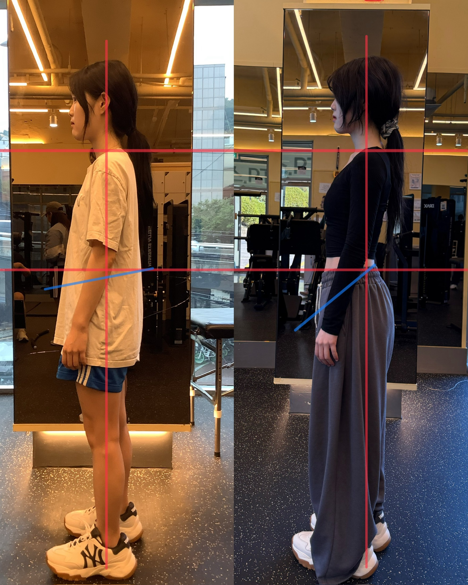
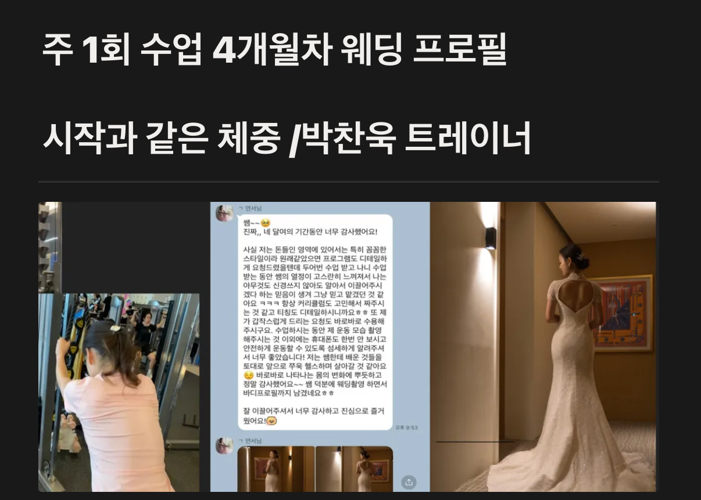
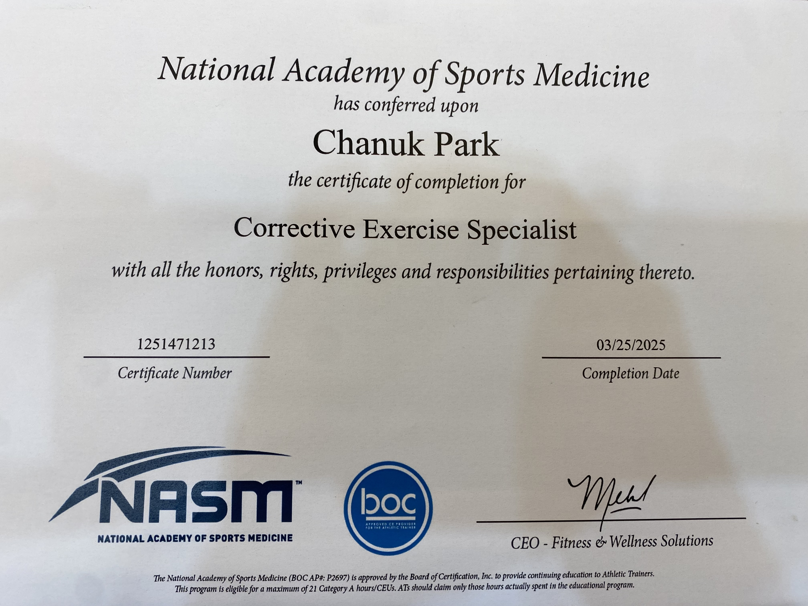
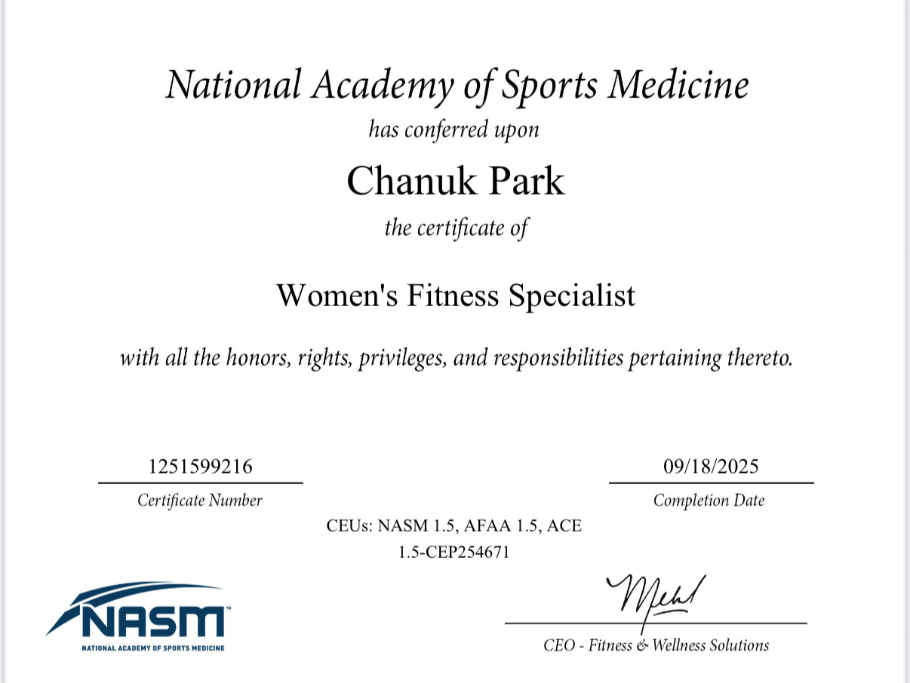
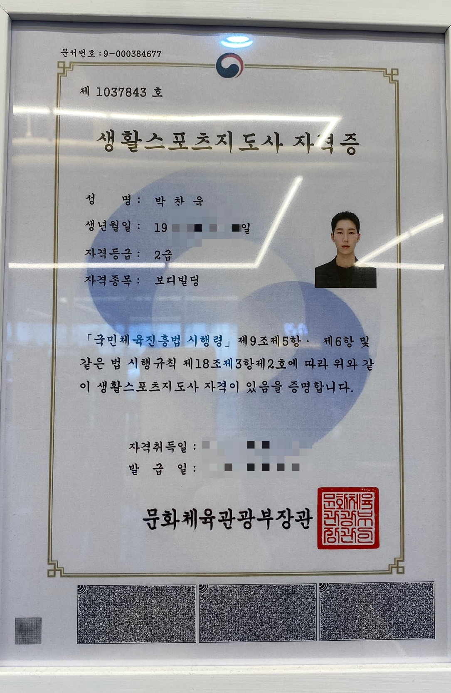
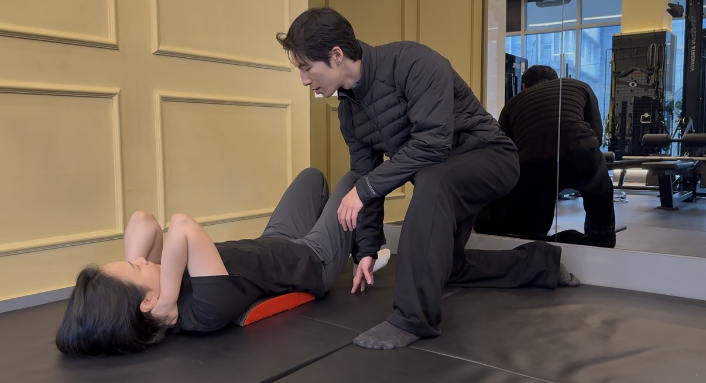
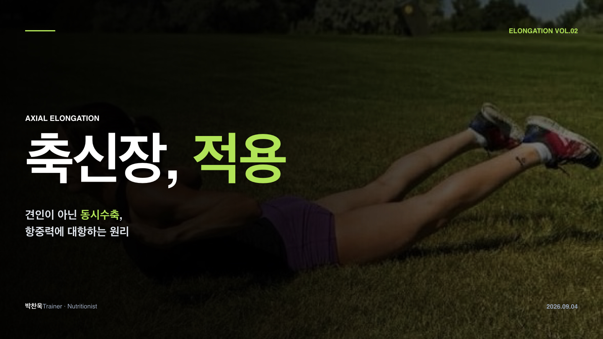
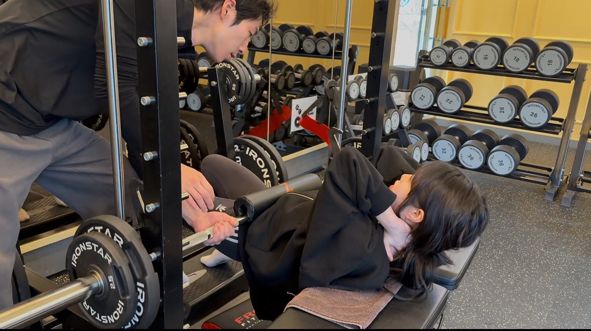

1986 FITNESS / PARK CHAN UK
내 몸을 이해하는 수업,
일상을 바꾸는 운동.
움직임 회복 · 웰니스 · 여성 맞춤
설명하고, 함께 확인하고, 나에게 맞춰가는 수업.

MEMBER STORIES
수업에서 일상까지,
함께 쌓아가는 변화.
회원님의 기록과 경험을 함께 살펴봅니다.


트레이너가 제공한 개별 회원 사례입니다. 촬영 조건과 운동 경험 등에 따라 결과는 달라지며, 동일한 변화나 치료 효과를 보장하지 않습니다.
LEARNING & QUALIFICATIONS
수업의 기본을 다지는
자격과 교육 과정.



YOUR WELLNESS PROGRAM
나의 상태와 목표에 맞는
세 가지 수업 방향.
누르면 자세한 수업 내용을 볼 수 있습니다.

MOVEMENT움직임 회복 트레이닝운동을 다시 시작할 때, 기본 동작부터 차근차근.상세 커리큘럼 보기상세 접기+

WELLNESS일상 웰니스 루틴운동하는 시간뿐 아니라, 일상의 컨디션까지.상세 커리큘럼 보기상세 접기+

WOMEN’S TRAINING여성 맞춤 트레이닝운동이 낯설어도, 나의 목표와 속도에 맞게.상세 커리큘럼 보기상세 접기+
SMART COACHING
아이패드로 함께 보고,
나에게 맞는 수업으로.
자료로 이해하고, 실제 동작으로 익힙니다.
젠스파크를 활용해 준비한 트레이너 제공 교육 자료입니다. 자료는 운동 설명을 위한 예시이며, 의학적 진단·치료를 대신하지 않습니다. 이미지를 누르면 크게 볼 수 있습니다.
UNDERSTAND YOUR BODY
오늘의 몸에 필요한 운동,
이유부터 알려드립니다.
무조건 강한 운동보다 지금 나에게 필요한 운동을 찾는 것. 박찬욱 트레이너의 수업은 움직임과 컨디션, 생활패턴을 함께 살피는 웰니스에서 시작합니다.
운동이 낯선 여성 회원님도 동작의 목적을 이해하며 배울 수 있도록, 설명과 수업 자료를 활용합니다. 운동을 다시 시작하는 분은 현재 가능한 범위에서 기본기를 차근차근 쌓습니다.
LET’S UNDERSTAND YOUR BODY
나에게 맞는 운동,
함께 찾아볼까요?
운동 목표와 평소의 컨디션을 알려주세요.
지금 시작할 수 있는 수업 방향부터 이야기합니다.